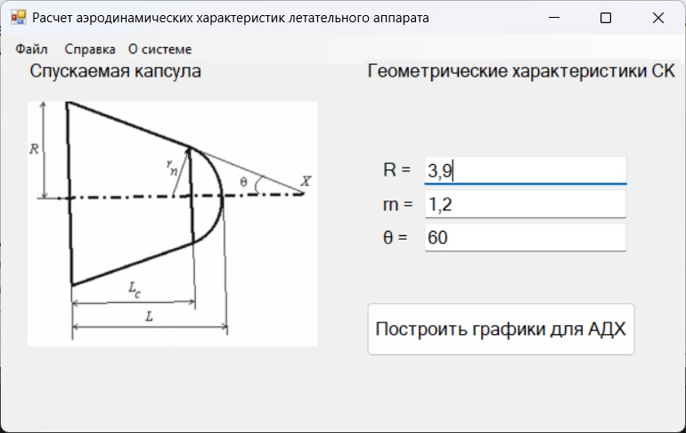

-
При запуске приложения пользователь попадает на главную страницу, где
он может ввести геометрические параметры модели:

Пользователь не может ввести отрицательные значения входных
параметров. При попытке это сделать, система откроет модальное окно с
преупреждением о некорректных входных данных и назначит входные данные
автоматически.
-
Просмотр графиков
После ввода корректных значений и нажати на кнопку "Построить графики
для АДХ" система расширяет экранную форму и создает панель с вкладками.
Пользователь может переключаться между вкладками панели для просмотра
всех графиков.
График зависимости Mzn от угла α
График зависимости Cy от угла α
График зависимости Cx от угла α
График зависимости Mzc от угла α
 График зависимости xD от угла α
График зависимости xD от угла α
График зависимости Cxv от угла α
График зависимости Cyv от угла α
График зависимости Cyv'(α) от угла α
-
Сохранение и загрузка параметров модели
Пользователь может сохранить параметры модели в файл и загрузить их из
файла в программу. Для сохранения необходимо заполнить входные параметры
и в шапке экранной формы нажать на вкладку "Файл" и выбрать пункт
"Сохранить параметры". Откроется экранная форма сохранения файла в
системе Windows.
Экранная форма сохранения файла в системе Windows
После сохранения система отобразит модальное окно об успехе или неудаче.
Модальное окно с сообщением об успешном сохранении параметров
модели
Для загрузки параметров модели из файла необходимо в шапке экранной
формы нажать на вкладку "Файл" и выбрать пункт "Загрузить параметры".
Откроется экранная форма загрузки файла в системе Windows.
Модальное окно с сообщением об успешном сохранении параметров
модели
После загрузки система отобразит модальное окно об успехе или неудаче.
Модальное окно с сообщением о неупешной загрузке параметров
модели
Модальное окно с сообщением об успешной загрузке параметров
модели